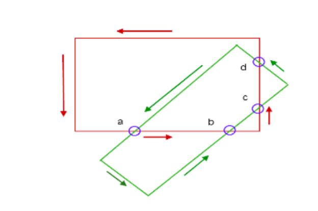
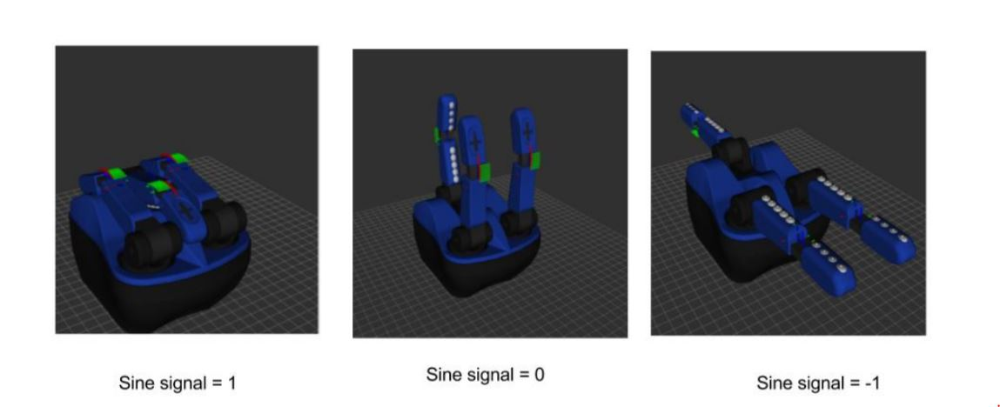

Robot Learning from Demonstration - TRINA via MOCAP
Tele-Robotic Intelligent Nursing Assistant via Motion Capture
Our motivation for this project was the current Trina tele-nursing robot. It has many degrees of freedom (14 on arms, 8 for hands, 2 for the mobile platform), therefore it is hard to control them all together. Input devices such as game pad, keyboard, mouse, haptic devices are used. However, they are limited by their own control abilities. For example, if the human operator wants to use game pad to command Trina, because the number of buttons on a game pad is smaller than the degrees of freedom of Trina, the game pad works in a mode-switching way. For dexterous manipulations, the human operator would need to constantly switch the control modes, which is time consuming, hard to manipulate, and not intuitive for human. Also, for such control strategies, there is always a learning curve for novice users. The task performance depends on the human operator’s expertise heavily. To address these problems, we wish to use Motion capture system(Mocap) and Learning from Demonstration (LfD) method on Trina. By using Mocap, the human body is used directly as a input device to teleoperate Trina. This control strategy has the potential to perform dexterous manipulations in teleoperation scenarios. With LfD, the robot would be able to extent its learned knowledge to new situations, thus frees the human operator from tedious repeated operations. In all, we want to establish an intuitive teleoperation and human-robot teaching-learning interface. Reinforcement learning(RL) could be added to existing LfD algorithms to allow the robot to adapt to the situations by itself and search for optimal solutions based on given demonstrations. Human demonstrations could serve as a start point for Reinforcement Learning thus shorten the searching time for RL. Ideally, the robot becomes an intelligent assistant to the human operator through its learning and adapting abilities.
Project Goals:
Based on these our over all goals were as follows : To setup teleoperation of nursing robot from Mocap system, here we needed to solve data transmission problem and correspondence problem. Second, on the algorithm side, we needed to investigate and implement learning from demonstration algorithms such as DMP, which enable robot to learn reaching to grasp tasks with obstacle avoidance, especially in cases of bi-manual coordination. Moreover, we needed to investigate how to integrate LfD with reinforcement learning (RL), which enable robot to explore manipulation motion based on the sub-optimal human demonstration. My major work in this project was based on our final objective to integrate Reinforcement Learning with LfD.
In the following figures the servo is connected to raspberry pi 3 and a 5v power source. You can
Learning of different grasping mode with RL
After the robot learns the reaching movement from DMP, the next step is to learn how to grasp. The paper by Personal Robotics provides an adequate solution to the grasp-detection problem, thus allowing us to spend more time on training grasps. It has been tested and verified to work on a Baxter robot and thus can confidently be used for our purpose. After detecting the grasp for the object and creating the bounding box for the grasp of the object, reinforcement learning can be used to manipulate the controls of the robot to actually grasp the object. The robot hand that we use has three fingers. Initial position of the three finger will be used to create a new bounding box. This bounding box will be the box that should be matching the grasp bounding box. If the two bounding boxes overlap then an accurate grasp can be implemented. The more overlapping of the two bounding boxes the better. As the three fingers can be positioned accordingly to grasp the object.
To complete this task Reinforcement Learning can be used. Using reinforcement learning the two bounding boxes can be made to learn to overlap each other so that the grasp is accurate. The procedure for this task would be something like this, first the object will be detected and a bounding box would be made around it’s grasp. The vision frame would be the environment of the reinforcement learning agent. Another bounding box, or the bounding box of the gripper would be a part of the environment. The grasp bounding box would be final position of the goal of the agent. Maximum reward would be given for obtaining this position in the environment. The position of the gripper bounding box would the state of the agent. Movement of the bounding box would be the actions of the agent. The maximum points of the gripper bounding box would be the state of the agent. Movement of the bounding box would be the actions of the agent. When maximum points of the gripper bounding box overlap on the grasp bounding box, it would be considered the optimal policy. If not actions can be taken to change the positions and orientation of the gripper bounding box, which in turn changes the robot hand position, so that the gripper can grasp the object accurately.
Summary:
In this project the final task is of grasping which can be achieved only by the movement of the hand. Here we use the three fingered hand from RightHand robotics called the reflex sf hand. The reflex sf hand consists of dynamixel servos with which the fingers are moved . Hence controlling the angle of these motors gives us a control of the hand. As our objective is to reach and grasp an object, in which the object is a cylindrical bottle, we use reinforcement learning to grasp the bottle with appropriate angle of the fingers.